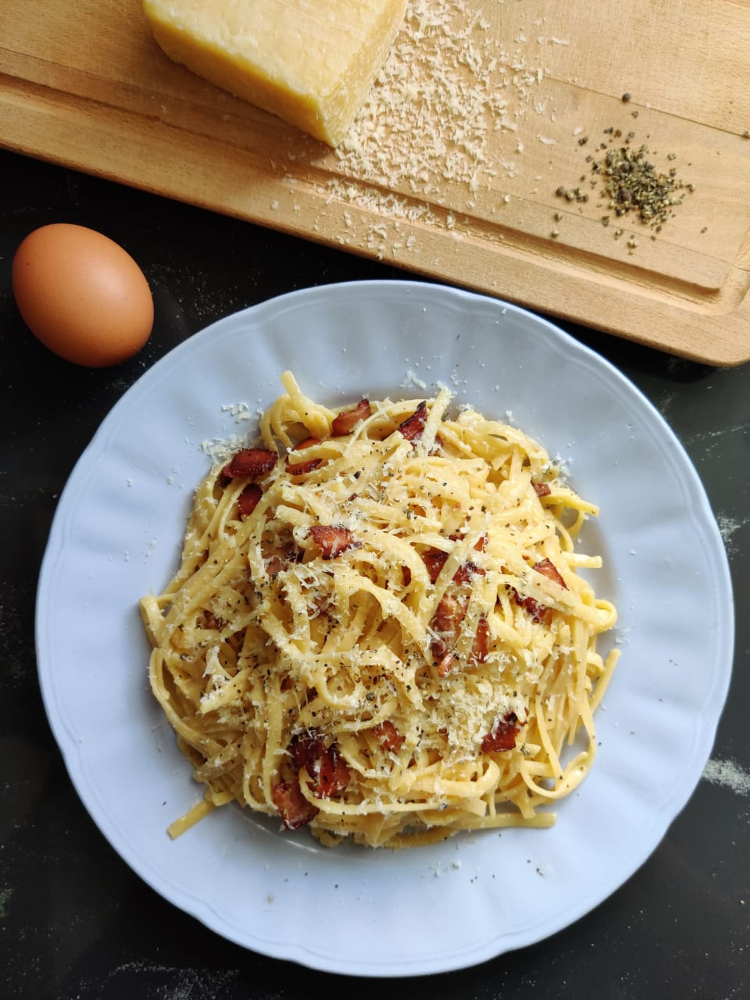

Carbonara is an authentic Roman pasta dish. It is said that the term "carbonara" originated from coal miners who would make this dish underground, where bits of charcoal that resemble carbon would fall onto the pasta, which would then later be substituted with ground black pepper. Spaghetti and linguine are typically used, but rigatoni and penne are great alternatives.
Contrary to popular belief, its creamy texture is not derrived from any form of cream, but is in fact the result of a rigatorious emulsification from the cheese, fat rendered from the pork cheeks, starchy pasta water and egg yolks only.